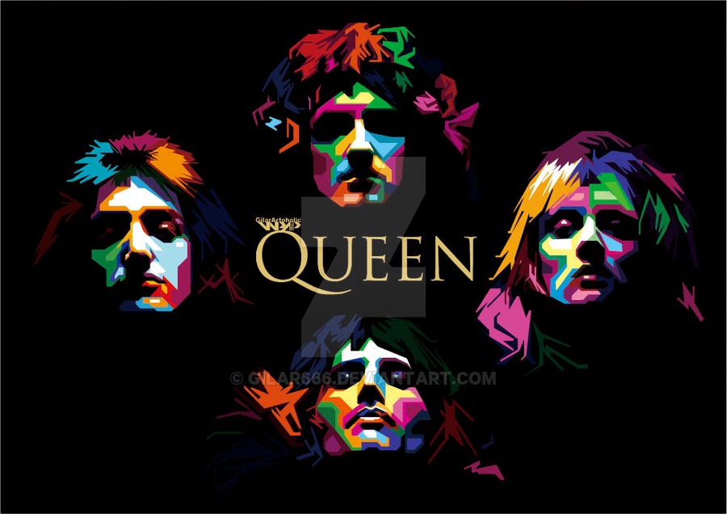

Queen es una banda británica de rock formada en 1970 en Londres por el cantante Freddie Mercury, el guitarrista Brian May, el baterista Roger Taylor y el bajista John Deacon. Si bien el grupo ha presentado bajas de dos de sus miembros (Freddie Mercury, fallecido en 1991, y John Deacon, retirado en 1997), los integrantes restantes, May y Taylor, continúan trabajando bajo el nombre Queen, por lo que la banda aún es considerada activa.4
El grupo gozó de un gran éxito en el Reino Unido con álbumes como Sheer Heart Attack (1974) y A Night at the Opera (1975). Este último llamó la atención internacionalmente, en especial por el sencillo "Bohemian Rhapsody", y colocó a Queen en un primer plano de la escena musical. Tuvieron una significativa repercusión en Estados Unidos a finales de los años 1970, ya con un numeroso repertorio de éxitos.5 A nivel artístico, se ha destacado su diversidad musical, sus arreglos en múltiples capas y sus armonías vocales. Es considerada una banda de gran influencia en el desarrollo del hard rock y el heavy metal, incorporando elementos del glam rock, rock progresivo, folk, blues y pop.
Fue una de las primeras agrupaciones musicales en hacer de sus conciertos espectáculos muy vistosos mediante el uso bombas de humo, flashpots o innovadores sistemas de luces móviles, además de promover la participación del público en los mismos, contribuyendo así al auge del arena rock.6 La crítica ha señalado el carisma de Freddie Mercury como una parte fundamental de sus presentaciones.7 A este respecto, habitualmente se han reconocido actuaciones como las del Live Aid en 1985 o el concierto del estadio de Wembley en 1986 como dos de los mejores recitales de rock de la historia.8 9 10 Aunque el cuarteto normalmente gozó de una gran popularidad y éxito comercial, en su momento una parte de la crítica no les tomó en serio, como por ejemplo cuando la publicación Rolling Stone criticó el álbum Jazz llamándolo "fascista".5 Tienen en su haber un total de quince álbumes de estudio, siete álbumes en vivo y numerosas recopilaciones.
Desde la muerte de Mercury y el retiro de Deacon del mundo musical, May y Taylor se han presentado juntos ocasionalmente en eventos especiales y programas televisivos como músicos invitados junto a otros artistas. Desde 2004 hasta 2009, trabajaron junto a Paul Rodgers bajo el nombre de Queen + Paul Rodgers.11 12 13 14 Con unas ventas estimadas en torno a 200 millones de discos, Queen es uno de los grupos más exitosos de todos los tiempos;15 su primer álbum compilatorio, Greatest Hits (1981), es todavía el álbum más vendido en la historia del Reino Unido con 6 millones de copias en este país.16 17 18
Queen fue nombrado el decimotercer mejor artista de hard rock de todos los tiempos en una lista elaborada por VH1 (VH1's 100 Greatest Artists of Hard Rock list);19 además, en un sondeo realizado por la emisora BBC Radio 2 en 2007, Queen fue elegido como «el mejor grupo británico de todos los tiempos».
{{ currentTime | date:'mm:ss':'+0000' }}
{{ timeLeft | date:'mm:ss':'+0000' }}
{{ totalTime | date:'mm:ss':'+0000' }}